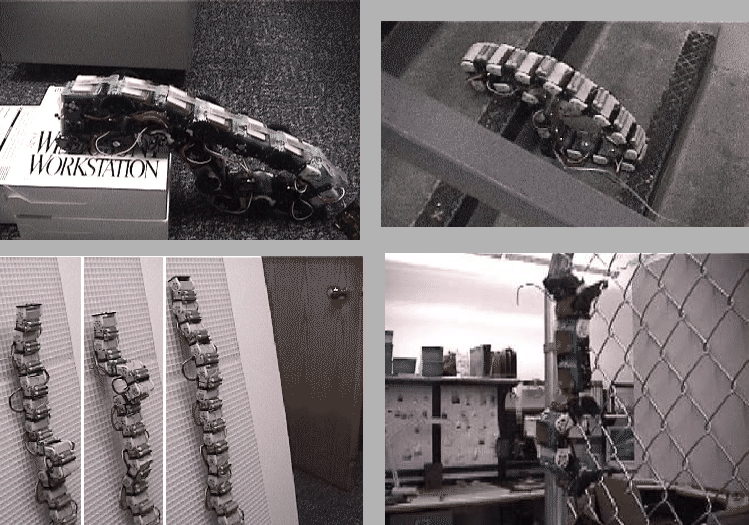

Next: 2.5.6 Generación G2
Up: 2.5 Polybot
Previous: 2.5.4 Experimentos
Contents
Todavía no son autoreconfigurables, pero son muy fácilmente ensamblables
a mano (no hay que atornillar). Por las conexiones se pasa la alimentación
y las líneas de comunicaciones. Tanto la alimentación como la electrónica
se encuentran dentro del propio módulo, por lo que son un poco más
grandes que los G1 (ver figura ![[*]](crossref.png) ). Se siguen
utilizando servos de RC, pero ahora se manejan en bucle
cerrado. Además de leer el potenciómetro del servo, tiene sensores
de fuerza. El objetivo es el estudio de la locomoción.
). Se siguen
utilizando servos de RC, pero ahora se manejan en bucle
cerrado. Además de leer el potenciómetro del servo, tiene sensores
de fuerza. El objetivo es el estudio de la locomoción.
Figure:
aspecto de un módulos G1v4
|
|
Los módulos tienen 4 placas de conexión en cada módulo, lo
que permite conectarlo con otros cuatro módulos. O bien se pueden
enganchar para formar una cadena y utilizar las placas restantes para
conectar elementos pasivos, como pies o ganchos.
Como alimentación utilizan se utilizan 6v proporcionados por pilas
AAA recargables (para cada módulo). 10 módulos conectados formando
una rueda (patrón de movimiento más eficiente), fueron capaces de
recorrer 0.5Km en 45 minutos.
Cada módulo dispone de un microcontrolador PIC16F877 y se
comunican entre sí mediante un bus serie RS232 (o 485).
Todas las aplicaciones de estos módulos se han orientado hacia el
estudio de la locomoción. Los experimentos realizados son los siguientes:
- Montar en triciclo. Este uno de los experimentos más interesantes
y fue portada la revista IEEE Spectrum[29]. Es un
ejemplo de cómo los robots modulares se pueden utilizar para manipular
objetos humanos. Un total de 20 módulos G1v4 se unieron formando dos
piernas y una cintura y se apoyaron en los pedales de un triciclo.
El movimiento coordinado de estas piernas hace que el triciclo avance,
con el robot encima (figura ).
Figure:
El experimento del triciclo, movido por módulos de tipo G1v4
|
|
- Adaptación al terreno: Al disponer de sensores de fuerza,
los módulos pueden detectar la presión ejercida sobre la superficie
por la que avanzan, pudiéndo adoptar su misma forma. Los experimentos
se han realizado con una configuración tipo rueda, de 10 módulos y
los resultados han sido impresionantes. Es capaz de atravesar obstáculos
de lo más diverso así como subir escaleras (ver figura )
- Trepar : Otra interesante aplicación es la habilidad para
trepar por vayas y meteriales porosos, usando bien unos ganchos o
bien unos pinchos. Mientras una parte del gusano permanece enganchada,
otra parte se se sitúa en la nueva posición, generándose una onda
que se propaga de la cola hasta la cabeza (ver figura ).
Se puede encontrar información en [34].
Figure:
Esperimentos con los módulos G1v4. En la foto superior izquierda,
el robot con forma de rueda se adapta a la forma del terreno para
atravesarlo. Arriba a la derecha el mismo robot subiendo una escalera.
En las fotos de abajo está trepando, en la izquierda sobre un material
poroso y en la derecha sobre una verja.

|
Next: 2.5.6 Generación G2
Up: 2.5 Polybot
Previous: 2.5.4 Experimentos
Contents
Juan Gonzalez
2003-12-20